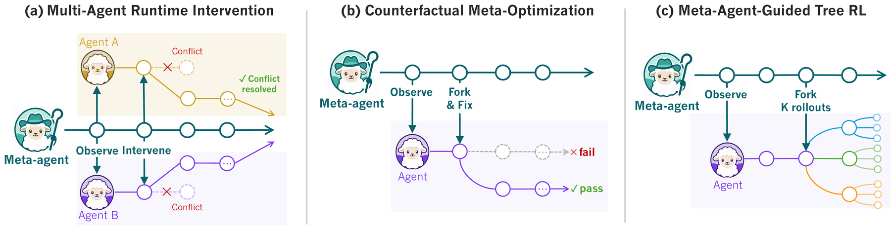

Shepherd: Enabling Programmable Meta-Agents via Reversible Agentic Execution Traces
Shepherd: Enabling Programmable Meta-Agents via Reversible Agentic Execution Traces
1Northeastern University · 2Stanford University

Motivation
Run two coding agents in parallel to ship a feature faster, and they will edit the same file blind to each other and ruin the work. The fix is a higher-order agent watching both, ready to step in before they collide. That is a meta-agent, and recent agentic systems increasingly look like this.1. Examples like: Anthropic's Claude Code composes dynamic workflows of sub-agents, Hermes Agents delegates to agent teams, and Kimi K2.5 coordinates an agent swarm.
A meta-agent needs the same few operations on the agent underneath: observe it, fork it to try another direction, revert it on failure, modify it to fix a bug, and resume. Most frameworks only expose raw transcripts and environment snapshots, so every meta-agent rebuilds the same machinery by hand: parsing logs, replaying from scratch, re-running code just to recover the environment.2. Check the table below for a comparison of BranchFS, Docker, OpenHands, and AgentGit. They are built for the agent that is running, not for a second agent acting on it.
| Method | Intercept execution | Fork agent + env | Revert to past state | Modify behavior |
|---|---|---|---|---|
| BranchFS | ○ | ◐ | ◐ | ○ |
| Docker | ○ | ◐ | ◐ | ○ |
| OpenHands | ◐ | ◐ | ◐ | ○ |
| AgentGit | ○ | ◐ | ◐ | ○ |
| ● | ● | ● | ● |
● full · ◐ partial · ○ none. Existing runtimes cover pieces of what a meta-agent needs;  Shepherd is the only one where a second agent can intercept and modify a running agent, while the rest can only snapshot its files.
Shepherd is the only one where a second agent can intercept and modify a running agent, while the rest can only snapshot its files.
Shepherd: A Runtime Substrate for Programmable Meta-Agents
A meta-agent operates on a run while it happens: it watches the run, branches it to try an alternative, rolls it back when it fails, patches it, and resumes. That only works if the run is something you can hold and manipulate, like a Git repo. So  Shepherd records everything an agent does, every model call, tool call, and file write, as a commit in a Git-like trace a meta-agent can read, branch, and rewind.
Shepherd records everything an agent does, every model call, tool call, and file write, as a commit in a Git-like trace a meta-agent can read, branch, and rewind.
 Shepherd has four parts:
Shepherd has four parts:
| Part | What it is | In FP terms |
|---|---|---|
| Task | An agent, written as a plain Python function with an @task decorator. |
a typed function |
| Effect | One thing an agent does. It records the intent (the call it is about to make) before the result, leaving room for a meta-agent to step in between the two. | an algebraic effect |
| Scope | Where an agent runs. Forking a scope copies the agent and its filesystem together in one cheap step. | a scoped effect handler |
| Trace | The run's history: a commit graph where any past state is reachable by its hash. | a persistent data structure |
A meta-agent works the trace the way you work a Git repo:
| In a Git repo | In a |
|---|---|
git checkout -b |
fork the agent and its environment to try an alternative |
git merge |
keep the branch that worked |
git branch -D |
drop the one that didn't |
git log |
read every model call, tool call, and edit as commits |
Because both the agent and its run are data, a meta-agent is just a function over another agent's run, composed and called like any other task. The example at the end shows one.
How it maps to functional programming
The life of an effect. The split between intent and result is what makes the rest work. When an agent is about to call a tool, it first emits the intent as an effect; the kernel records it, and any subscribed meta-agent sees it on the stream. Only then does the call run, and its outcome is written back to the same effect. That ordering is why a supervisor can observe without perturbing (it reads intents the worker already emits) and intervene before damage lands (it acts in the gap between intent and result).
The mapping in the table above is exact, and the properties a meta-agent relies on fall straight out of it. Algebraic effects are why observation never perturbs the worker and interception is possible at all: the intent exists as a value on the stream before the action runs. Scoped handlers are why a fork is a clean, nestable branch that merges back or is discarded as a unit. A persistent, content-addressed trace is why any past state replays exactly instead of being rebuilt from a log.
The deterministic core of this calculus is mechanized in Lean, which lets us state the replay and revert guarantees precisely instead of by convention.
Infrastructure: Shepherd's System Performance
A meta-agent leans on a few operations over and over: it observes agents, forks one to branch a parallel attempt, reverts on failure, and replays a trajectory to try an alternative. At runtime each has to be cheap enough to reach for without thinking. We measure the two on the hot path, fork and revert.
Setup
We compare four ways to branch a running container's filesystem: a full root-fs copy (tar), docker commit, BranchFS, and  Shepherd's overlay.3. The Docker images are pre-built task environments from Terminal-Bench 2.0 (Merrill et al., 2026). The workloads are three Terminal-Bench 2.0 images at 42 MB, 200 MB, and 5.8 GB,4. All runs use a single 4 vCPU / 8 GB Linux host. and we average fork and revert over 50 runs each.
Shepherd's overlay.3. The Docker images are pre-built task environments from Terminal-Bench 2.0 (Merrill et al., 2026). The workloads are three Terminal-Bench 2.0 images at 42 MB, 200 MB, and 5.8 GB,4. All runs use a single 4 vCPU / 8 GB Linux host. and we average fork and revert over 50 runs each.
Fork and revert latency
| Method | Fork 42 MB | Fork 200 MB | Fork 5.8 GB | Storage / fork |
|---|---|---|---|---|
| Full root-fs copy | 5,154 ms | 5,971 ms | 53,462 ms | up to 8.3 GB |
| docker commit | 658 ms | 692 ms | 725 ms | 30 KB |
| BranchFS | 266 ms | 272 ms | 280 ms | 12 KB |
| 134 ms | 135 ms | 143 ms | 10 KB |
Fork latency is flat across image sizes: 134 ms at 42 MB, 143 ms at 5.8 GB. A 138x bigger image costs 9 ms more, because overlay cost tracks what a branch writes, not how big the image is. That puts a fork about 5x faster than docker commit and up to 374x faster than copying the 5.8 GB root filesystem. Revert is the same, 140 to 147 ms. Replaying a fork is just as cheap: the unchanged prefix is reused from the provider's KV cache, about 95% of the tokens, so a branch only pays for what it adds.
Experiments
We build three meta-agents on  Shepherd, one for each moment in an agent's life: while it runs, after it finishes, and while it trains. Each is an ordinary agent, and each leans on a different property of the substrate.
Shepherd, one for each moment in an agent's life: while it runs, after it finishes, and while it trains. Each is an ordinary agent, and each leans on a different property of the substrate.
| When | Meta-agent | Substrate property it leans on |
|---|---|---|
| While agents run | Multi-Agent Runtime Intervention | Observe |
| After agents finish | Counterfactual Meta-Optimization | Replay |
| While training agents | Meta-Agent-Guided Tree RL | Fork |

Multi-Agent Runtime Intervention
CooperBench shows that two coding agents working one repository in parallel do worse than one agent doing both, because neither sees what the other is about to change. The fix is a supervisor that watches both and steps in before a conflict lands.
Setup. Each task pairs two related features in one repo. Two Claude Haiku 4.5  workers run one feature each in parallel, and a pair passes only if both do. We compare four conditions: solo (one agent, in sequence), uncoordinated parallel, coop (peer-to-peer messages), and two workers under a meta-agent (ours).
workers run one feature each in parallel, and a pair passes only if both do. We compare four conditions: solo (one agent, in sequence), uncoordinated parallel, coop (peer-to-peer messages), and two workers under a meta-agent (ours).
The meta-agent subscribes to both workers' effect streams. Every few seconds it looks at what each worker is doing and picks one of three actions: inject a note into a worker's context to redirect it, handoff one worker's finished scope to the other so the second builds on the first instead of colliding with it, or discard a worker that has gotten stuck and restart it from a clean fork.
Results. The coop baseline reaches 28.8%, about half of the 57.2% solo ceiling: peer messages alone do not keep two agents out of each other's way. A Sonnet meta-agent lifts the pass rate to 45.3%, and an Opus one to 54.7%, a 1.9x gain over coop.

The two supervisors reach for different tools. Counting pairs where each action fires at least once, the Opus meta-agent injects on 39.2% of pairs, hands off on 31.5%, and discards rarely (4.6%): it prefers to nudge and to reuse work. The weaker Sonnet supervisor intervenes less (26.4% inject, 18.7% handoff) but discards more often (7.9%), leaning on the blunt action when the precise ones are harder to land.

Counterfactual Meta-Optimization
Optimizing a multi-step workflow is noisy. Tweak one prompt and the score moves two points; re-run it and you get a third number. Optimizers that re-test each candidate from a fresh run spend most of their budget fighting that noise, so CRO holds the run fixed instead.
Setup. We compare CRO against GEPA and MetaHarness on five benchmarks (HoVer, MATH, IFBench, LiveCodeBench, Terminal-Bench 2.0). GPT-5.4-mini runs the workflow, GPT-5.4 proposes the edits, and we record held-out pass rate and optimization wall-clock.
How CRO works. CRO holds everything constant except the edit. It takes a finished run, forks the trace at the first commit the edit touches, and replays only the suffix from there, against the unchanged prefix as a fixed baseline.
Results. CRO takes 4 of the 5 benchmarks, with the highest held-out score and the lowest wall-clock on each. The margins are widest where exploration matters most: it scores 27.5% higher than MetaHarness on LiveCodeBench (51.0 vs 40.0), and on execution-bound Terminal-Bench 2.0, where neither GEPA nor MetaHarness beats the baseline at all, it lifts the score by 12.8% (31.2 to 35.2) at the least wall-clock of any method.
| Method | HoVer | MATH | IFBench | LiveCodeBench | TB-2 (avg@5) |
|---|---|---|---|---|---|
| Baseline | 43.7±0.0 | 60.7±1.2 | 42.4±1.8 | 30.7±2.1 | 31.2 |
| GEPA | 43.7±0.0 (67) | 74.0±3.5 (20) | 50.1±1.2 (50) | 48.7±1.5 (73) | 31.2 (157) |
| MetaHarness | 77.8±0.4 (235) | 79.3±1.2 (101) | 52.3±1.4 (126) | 40.0±3.6 (217) | 31.2 (173) |
| 79.4±0.2 (120) | 80.0±2.0 (42) | 51.3±1.1 (82) | 51.0±1.7 (117) | 35.2 (73) |
Held-out pass rate (mean ± std); optimization minutes in parentheses; bold = best per column. CRO's biggest gain is on LiveCodeBench, +27.5% over MetaHarness.

Meta-Agent-Guided Tree RL
A terminal agent can run thirty commands to fix a broken build and get back one bit at the end, fixed or not. Flat GRPO can't tell which command earned the reward, so it reinforces all of them equally and learns slowly.
Setup. During rollout collection on Endless Terminals tasks, the meta-agent forks at selected turns and samples K=4 sibling continuations from that state; their advantages come from the spread across siblings, so no value model is needed. Flat GRPO and Tree-GRPO use matched generation compute, so the tree adds signal, not cost.
Why the forks help. Two siblings that share a prefix and diverge at one turn give a per-step counterfactual: the difference in their final rewards is what that turn was worth. That is the credit-assignment signal flat GRPO lacks, a finer-grained reward than one score at the end. And because forked branches reuse the shared prefix, each sibling pays only for its own suffix, so a K-way tree costs about K extra suffixes, not K full rollouts.

Results. On Terminal-Bench 2.0 (avg@5 over 89 tasks, 5 seeds):
| Model | Base | Flat GRPO | |
|---|---|---|---|
| Qwen3.5-35B-A3B | 26.1±4.21 | 34.2±4.05 | 39.4±3.87 (+15.2%) |
| Nemotron-3-Super-120B-A12B | 30.3±3.62 | 33.8±3.41 | 37.2±3.19 (+10.1%) |
Terminal-Bench 2.0 performance, avg@5 (%); gain is relative improvement over flat GRPO.
FAQ
Does Shepherd run on Linux, macOS, and Windows?
Shepherd currently supports both Linux and macOS. For Windows, we suggest WSL2 for now. First-class Windows support is on the roadmap; see the docs for current status.
Do I have to rewrite my agent? Does it work with my model?
Shepherd is its own lightweight, multi-provider framework: you write agents, and meta-agents, as typed @task functions and swap the model behind a provider (Claude by default). A meta-agent then supervises any task on the substrate without that task knowing it is watched. It is the runtime your agents run on: you build on it directly.
Does it replace my sandbox, or wrap it? Can I self-host?
It wraps it. Shepherd adds a layer over the container your agent already runs in, with off-the-shelf support for backends like E2B, Modal, and Daytona, behind one Device interface. Shepherd is open source and self-hostable, with no hosted-service lock-in.
What does a fork capture?
Everything the agent needs to keep going from that exact point: its filesystem and process state, its message history and model context, and its position in the execution trace, all captured together in one step. Replay the branch and the agent picks up where it left off.
When you "replay" a run, do you re-run the model? Is that faithful if LLMs are non-deterministic?
A replay restores the recorded prefix exactly, the same messages and files, served from the provider's prompt cache, so it is not re-run. Only the suffix after your change re-executes. That is the point: everything up to the edit is held fixed and just the affected tail runs forward, which is what lets CRO judge an edit against an identical baseline instead of a fresh roll of the dice.
Is this production-ready, or a research substrate?
Today Shepherd is built for research, and we are actively moving it toward production. The core is small and its correctness argument is checked in Lean, and we maintain and harden the framework with each release. You can build on it now, and it will keep getting more production-ready over time.
Why
 Shepherd? and why a sheep?
Shepherd? and why a sheep?

A  Shepherd is exactly the job. A real shepherd doesn't do the grazing: it watches the flock, keeps the sheep on track, and steps in when one wanders toward a cliff. That is what a meta-agent does for your worker agents. It watches the run, nudges a stray back, and pulls the agent out of trouble before it falls. The logo is a sheep in a little hat, the same animal as the workers, just the one keeping an eye on the rest. And yes, we also think it's cute.
Shepherd is exactly the job. A real shepherd doesn't do the grazing: it watches the flock, keeps the sheep on track, and steps in when one wanders toward a cliff. That is what a meta-agent does for your worker agents. It watches the run, nudges a stray back, and pulls the agent out of trouble before it falls. The logo is a sheep in a little hat, the same animal as the workers, just the one keeping an eye on the rest. And yes, we also think it's cute.
Try it
pip install shepherd-ai
You write an agent, and a meta-agent, as @task functions and run them in a workspace. A meta-agent takes another agent's run as an argument, so supervising one is just another task:
from shepherd import task, workspace
from shepherd.providers import claude
@task
def implement(repo, feature) -> str:
"Implement the feature in the repo."
@task
def oversee(worker, repo, feature) -> str:
"Watch the worker. If its tests fail, revert to the last green commit and retry."
with workspace(model=claude("sonnet-4-5")):
result = oversee(implement, repo, "login")
Every run is recorded as a Git-like trace, which you can read from the CLI:
shepherd run list # list recorded runs
shepherd run trace <run-ref> # walk a run, commit by commit
$ shepherd run trace fix-login * 6 e8f1a2c tool pytest tests/ ✗ 2 failed * 5 3b9d40e edit auth/session.py +18 -4 * 4 a1c77f2 tool pytest tests/ ✓ 41 passed * 3 9f4e2a1 edit auth/login.py +12 -3 * 2 7c8d5b0 tool grep -rn "session" auth/ * 1 c0ffee1 model plan: fix the login bug * 0 0a2b8c1 run "fix the login bug" (root)
A meta-agent rewinds a run the same way: it reverts the worker to an earlier commit and forks a fresh continuation, the revert-and-retry that oversee does above.
Acknowledgments
Thanks to our early readers for their feedback.
@misc{yu2026shepherdenablingprogrammablemetaagents,
title={Shepherd: Enabling Programmable Meta-Agents via Reversible Agentic Execution Traces},
author={Simon Yu and Derek Chong and Ananjan Nandi and Dilara Soylu and Jiuding Sun and Christopher D Manning and Weiyan Shi},
year={2026},
eprint={2605.10913},
archivePrefix={arXiv},
primaryClass={cs.AI},
url={https://arxiv.org/abs/2605.10913}
}